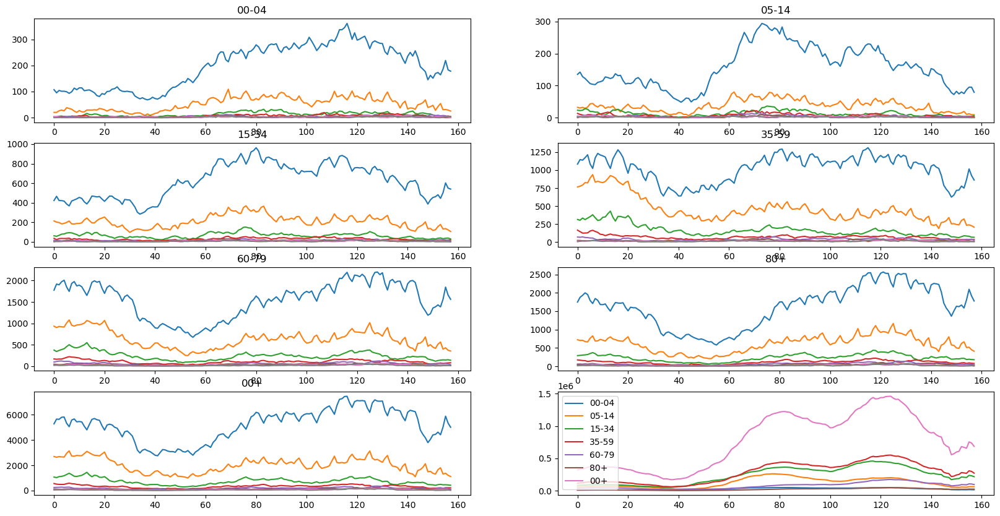
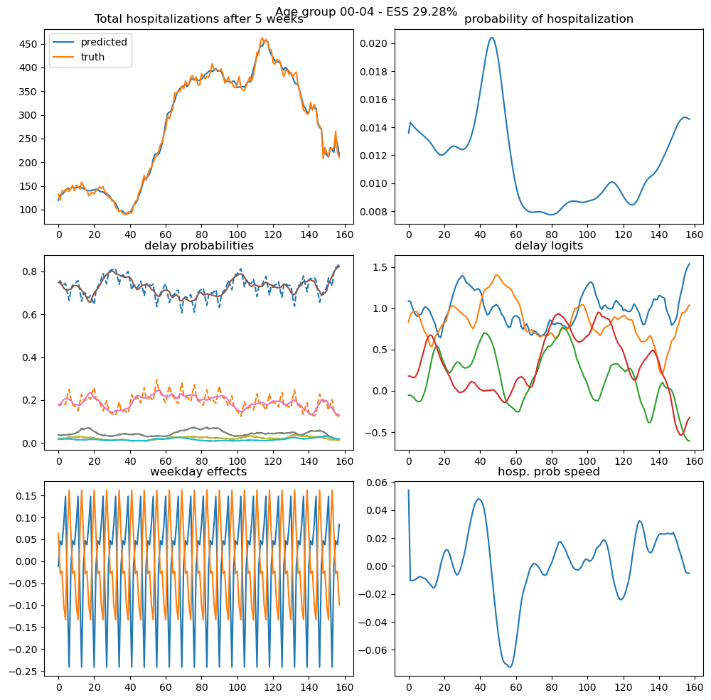

from jax import config
import pickle
config.update("jax_enable_x64", True)
from ssm4epi.models.hospitalization import (
hospitalization_model,
dates,
unique_a,
h_by_age,
I_by_age,
)
from ssm4epi.models.util import from_consecutive_logits
from isssm.importance_sampling import mc_integration
from isssm.kalman import state_mode
from jax import vmap
from ssm4epi.patch import full_deps
import jax.numpy as jnp
from pyprojroot import here
import matplotlib.pyplot as plt
from isssm.estimation import initial_theta, mle_pgssm
from isssm.laplace_approximation import laplace_approximation as LA
from isssm.modified_efficient_importance_sampling import (
modified_efficient_importance_sampling as MEIS,
)
from isssm.importance_sampling import pgssm_importance_sampling, ess_pct
import jax.random as jrnApplication 1: Showcase
Run hospitalization model on all data until final NCH evaluation date.
from typing import NamedTuple
from jaxtyping import Float, Array, PRNGKeyArray
from scipy.optimize import OptimizeResult
from isssm.typing import GLSSMProposal
class HospitalizationResult(NamedTuple):
a_index: int
h: Float[Array, "..."]
I: Float[Array, "..."]
y: Float[Array, "np1 p"]
theta0: Float[Array, "5"]
theta0_result: OptimizeResult
theta_hat: Float[Array, "5"]
theta_hat_result: OptimizeResult
proposal: GLSSMProposal
key: PRNGKeyArray
ess_pct: Floatstart_date = "2021-11-22"
end_date = "2022-04-29"
n_iter = 100
N_mle = 1000
N_meis = 1000
N_ess = 10000
N_fit = 10000
N_predict = 10000def showcase_result(a_index: int, n_delay: int) -> HospitalizationResult:
i_start = int(jnp.where(dates == start_date)[0][0])
np1 = int(jnp.where(dates == end_date)[0][0]) - i_start
h = h_by_age[a_index][:, :n_delay]
I = I_by_age[a_index][i_start : i_start + np1]
unique_a[a_index]
key = jrn.PRNGKey(4234809124)
y = h[i_start : i_start + np1]
aux = (np1, n_delay, 2, I)
p0_hat = y[:7].sum() / I[:7].sum()
theta_manual = jnp.log(jnp.array([1**2, 0.1**2, 0.1**2, 0.1**2, p0_hat]))
theta0_result = initial_theta(y, hospitalization_model, theta_manual, aux, n_iter)
theta0 = theta0_result.x
key, subkey = jrn.split(key)
mle_result = None
theta_hat = None
# mle_result = mle_pgssm(y, hospitalization_model, theta0, aux, n_iter, N_mle, subkey)
# theta_hat = mle_result.x
fitted_model = hospitalization_model(theta0, aux)
proposal_la, _ = LA(y, fitted_model, n_iter)
key, subkey = jrn.split(key)
proposal_meis, _ = MEIS(
y, fitted_model, proposal_la.z, proposal_la.Omega, n_iter, N_meis, subkey
)
key, subkey = jrn.split(key)
proposal = proposal_meis
_, log_weights = pgssm_importance_sampling(
y, fitted_model, proposal.z, proposal.Omega, N_ess, subkey
)
result = HospitalizationResult(
a_index,
h,
I,
y,
theta0,
theta0_result,
theta_hat,
mle_result,
proposal,
key,
ess_pct(log_weights),
)
with open(
here()
/ "data"
/ "results"
/ "4_hospitalizations"
/ "showcase"
/ f"result_A{a_index}_D{n_delay}.pkl",
"wb",
) as f:
pickle.dump(result, f)
print(f"Finished results for a_index {a_index} and n_delay {n_delay}")
return resultfig, axs = plt.subplots(4, 2, figsize=(20, 10))
axs = axs.flatten()
for a_index in range(len(unique_a)):
h = h_by_age[a_index]
I = I_by_age[a_index]
unique_a[a_index]
i_start = int(jnp.where(dates == start_date)[0][0])
np1 = int(jnp.where(dates == end_date)[0][0]) - i_start
y = h[i_start : i_start + np1]
axs[a_index].plot(y)
axs[a_index].set_title(f"{unique_a[a_index]}")
axs[-1].plot(jnp.array(I_by_age).T[i_start : i_start + np1], label=unique_a)
axs[-1].legend()
plt.show()
from ssm4epi.models.hospitalization import delays_per_age
results = [
showcase_result(a_index, n_delay) for _, (a_index, n_delay) in delays_per_age.iterrows()
]Finished results for a_index 0 and n_delay 5
Finished results for a_index 1 and n_delay 5
Finished results for a_index 2 and n_delay 7
Finished results for a_index 3 and n_delay 7
Finished results for a_index 4 and n_delay 8
Finished results for a_index 5 and n_delay 8
Finished results for a_index 6 and n_delay 8from ssm4epi.models.hospitalization import visualize_model_fit
def visualize_result(result: HospitalizationResult):
i_start = int(jnp.where(dates == start_date)[0][0])
# I = result.I[i_start : i_start + np1]
key, subkey = jrn.split(result.key)
np1, n_delay = result.y.shape
aux = (result.y.shape[0], n_delay, 2, result.I)
model = hospitalization_model(result.theta0, aux)
samples, log_weights = pgssm_importance_sampling(
result.y,
model,
result.proposal.z,
result.proposal.Omega,
N_fit,
subkey,
)
visualize_model_fit(
samples, log_weights, model, i_start, np1, result.y, result.a_index
)
visualize_result(results[0])
from isssm.importance_sampling import prediction
key = jrn.PRNGKey(2342312412)
key, subkey_prediction = jrn.split(key)
def f_pred(x, s, y):
np1, n_delay = y.shape
p = jnp.exp(s[:, :1])
delay_dist_smooth = from_consecutive_logits(x[:, 2 : (2 + n_delay - 1)])
delay_dist_observed = from_consecutive_logits(s[:, 1:])
weekday_1 = jnp.exp(x[:, (2 + n_delay - 1)][:, None])
weekday_2 = jnp.exp(x[:, (2 + n_delay - 1 + 6)][:, None])
average_delay = jnp.sum(
delay_dist_smooth * jnp.arange(n_delay), axis=-1, keepdims=True
)
return jnp.concatenate(
(
p,
delay_dist_smooth,
delay_dist_observed,
weekday_1,
weekday_2,
average_delay,
),
axis=-1,
)
percentiles_of_interest = jnp.array(
[0.01, 0.025, *(0.05 * jnp.arange(1, 20)), 0.975, 0.99]
)
def stacked_prediction(f, result: HospitalizationResult):
proposal = result.proposal
result.theta0
fitted_model = hospitalization_model(
result.theta0, (result.y.shape[0], result.y.shape[1], 2, result.I)
)
mean, sd, quantiles = prediction(
f,
result.y,
proposal,
fitted_model,
N_predict,
subkey_prediction,
percentiles_of_interest,
)
return jnp.vstack((mean[None], sd[None], quantiles))
for i, result in enumerate(results):
jnp.save(
here()
/ f"data/results/4_hospitalizations/showcase/predictions_age_{unique_a[i]}.npy",
stacked_prediction(f_pred, result),
)data/results/4_hospitalizations/showcase/hyperparams.tex
hyperparams_statement = f"""
To fit the model for all age groups, we use at most {n_iter} iterations for all occurences of the \\gls{{la}}, with a convergence threshold set to $10^{{-5}}$ relative difference in $z$ and $\\Omega$. We use the same method for \\gls{{eis}}, where we additionally use ${N_meis:,}$ samples to determine the optimal proposal, starting with the proposal given by th \\gls{{la}}.
For \\gls{{mle}}, we use ${N_mle:,}$ samples to determine the maximum likelihood estimate of the parameters, initializing at the initial guess given by \\Cref{{alg:mle}}.
To obtain prediction intervals of the states, signals and missing observations we use ${N_predict:,}$ samples. To estimate the \\gls{{ess}} we use ${N_ess:,}$ samples. Note that all sample sizes are given before constructing the three antithetic variables.
"""
# write to tex file
with open(
here() / "data/results/4_hospitalizations/showcase/hyperparams.tex", "w"
) as f:
f.write(hyperparams_statement)import pandas as pd
with open(here() / "tables" / "hospitalization_showcase_ess.tex", "w") as f:
table = pd.DataFrame(
{
"Age group": [f"A{a}" for a in unique_a],
"EF [%]": [f"{result.ess_pct:.0f}" for result in results],
"weeks of delay": n_delays,
}
).to_latex(index=False)
f.write(table)/var/folders/9y/xdxkkt710kx5tf1j0p68y46r0000gn/T/ipykernel_19755/377309747.py:4: FutureWarning: In future versions `DataFrame.to_latex` is expected to utilise the base implementation of `Styler.to_latex` for formatting and rendering. The arguments signature may therefore change. It is recommended instead to use `DataFrame.style.to_latex` which also contains additional functionality.
table = pd.DataFrame(